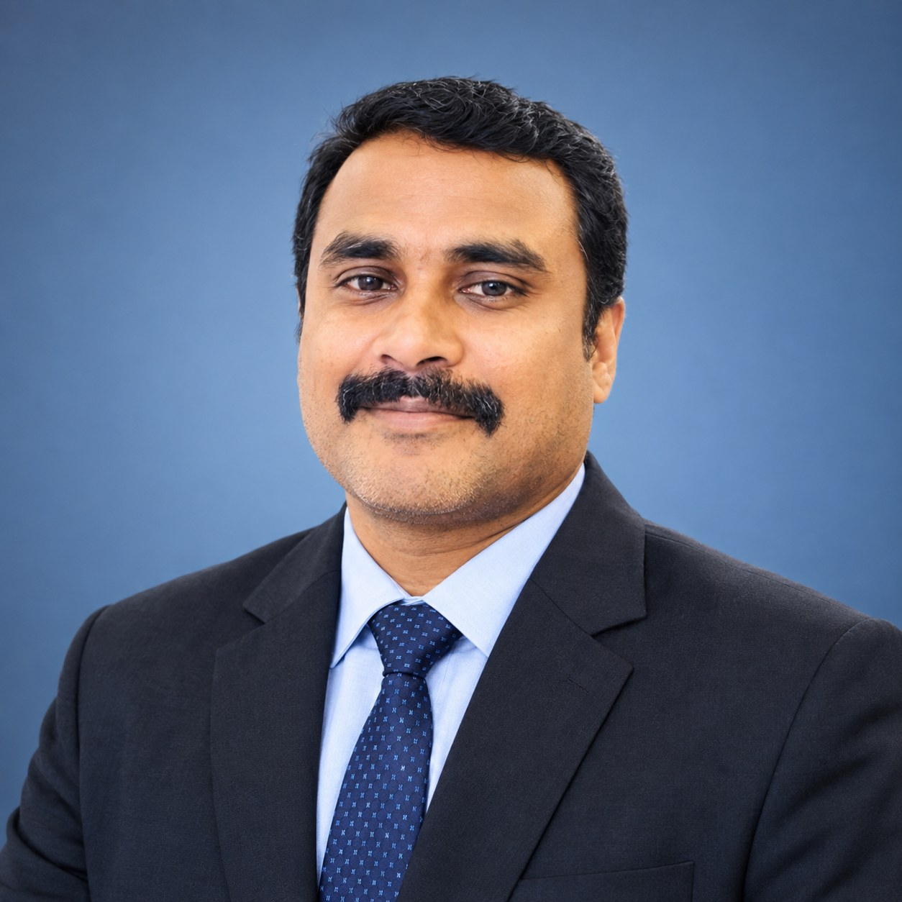

OUR VISION
ABOUT MANIMAX TECH
Engineering curiosity into practical capability.
An emerging Indian engineering and technology enterprise focused on antenna engineering, RF components and UAV technology.
OUR COMPANY
Research, design and indigenous development.
Established in July 2026, MANIMAX TECH is an Udyam-registered Micro Enterprise based in Dindigul, Tamil Nadu, India.
The company focuses on the research, design, simulation, development, testing and characterisation of advanced antenna systems, along with drone development and UAV communication technologies.
Our aim is to address engineering challenges associated with antenna performance, wireless connectivity, RF integration and communication reliability in modern unmanned aerial systems.
Established July 2026Udyam-registered Micro EnterpriseDindigul, Tamil Nadu
OUR MISSION
- Develop innovative, application-specific antenna technologies.
- Provide reliable antenna testing and RF characterisation services.
- Advance UAV communication and telemetry system development.
- Promote indigenous engineering research and technology innovation.
- Establish technical collaborations with industries and research institutions.

TECHNICAL LEADERSHIP FOUNDER & TECHNICAL LEAD
Dr. M. Manikandan
Technology Strategy · R&D · Antenna Engineering · RF & UAV Systems
Dr. M. Manikandan is an academician, researcher, entrepreneur and engineering professional with more than 15 years of teaching experience and industry exposure in Electronics and Communication Engineering.
He holds a Ph.D. in Antenna Design from Anna University, Chennai, with doctoral research focused on low-SAR antennas for mobile applications. His qualifications also include an M.E. in Applied Electronics, B.E. in Electronics and Communication Engineering and D.E.C.E.
He currently serves as an AICTE Industry Fellow at Garuda Aerospace Pvt. Ltd., Chennai, and served as an Academician in various Engineering colleges.
His technical interests include antenna design, RF and microwave engineering, electromagnetic simulation, antenna testing, UAV communication and telemetry systems. His supplied profile records 10 SCIE/Scopus-indexed research articles and three published Indian patent applications.
View LinkedIn profile ↗
CO-FOUNDER
CO-FOUNDER & DIRECTOR – BUSINESS OPERATIONS
Mrs. V. Femina
Business Management · Administration · Finance Coordination · Operations
Mrs. V. Femina is an experienced engineering academician and professional with more than 15 years of teaching experience in Electronics and Communication Engineering. She holds an M.E. in Communication Systems from the Regional Centre of Anna University, Coimbatore, and a B.E. in Electronics and Communication Engineering from PSNA College of Engineering and Technology, Dindigul.
Her expertise encompasses communication systems, wireless networks, electromagnetic fields, transmission lines, antennas, RF and microwave engineering, digital signal processing and electronic systems. She has guided undergraduate engineering projects, delivered invited guest lectures and participated in faculty development programmes, technical workshops and professional training activities.
Her research contributions include publications in inter-vehicular communication, smart city applications, energy-efficient wireless networks and intelligent transportation systems. She is also a Lifetime Member of the Indian Society for Technical Education (ISTE).
At MANIMAX TECH, she contributes to business operations, organisational coordination, administrative management and the development of business activities.
View LinkedIn profile ↗ MARKETS WE SERVE
Engineering across industries.
Aerospace & UAVDefence applicationsTelecommunicationsAcademic researchIndustrial R&DRF & microwave